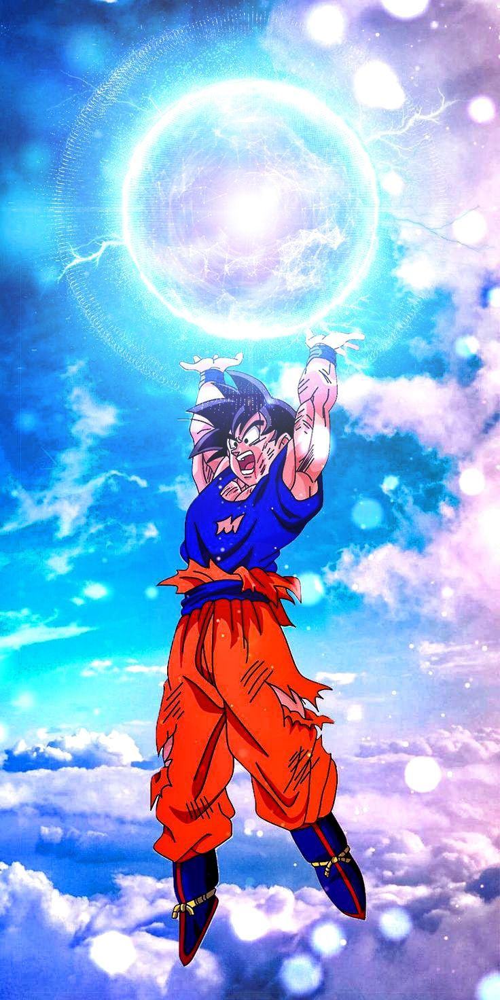

Dragon Ball: Dragon's Spirit
Técnicas

Transformaciones


En Dragon Ball: Dragon's Spirit existen distintos rangos de técnicas.
Coste: 10 Ki
Control de Ki: 10
Una fina hoja de energía comprimida que se lanza como proyectil.
Coste: 5 Ki
Control de Ki: 5
Microexplosión de energía al impactar un golpe físico.
Coste: 10 Ki
Control de Ki: 15
Movimiento explosivo de corta distancia utilizando Ki en las piernas.
Coste: 5 Ki
Control de Ki: 10
Golpe que libera energía dentro del punto de contacto.
Coste: 10 Ki
Control de Ki: 20
El usuario envuelve sus manos con Ki para reforzar la fuerza de agarre.
Coste: 5 Ki
Control de Ki: 10
Liberación de energía en forma de empuje frontal.
Coste: 10 Ki
Control de Ki: 25
El usuario deja pequeñas explosiones de Ki mientras se mueve.
Coste: 5 Ki
Control de Ki: 10
Marca energética diseñada para confundir el rastreo enemigo.
Coste: 15 Ki
Control de Ki: 25
Golpe reforzado por una pequeña explosión de Ki al impactar.
Coste: 20 Ki
Control de Ki: 30
Concentración extrema de Ki en un único impacto.
Coste: 5 Ki
Control de Ki: 5
Proyectil básico de energía lanzado desde manos o dedos.
Coste: 20 Ki
Control de Ki: 35
Liberación de energía alrededor del usuario.
Coste: 5 Ki c/u
Control de Ki: 5
Disparos consecutivos de pequeñas esferas de energía.
Coste: 20 Ki
Control de Ki: 30
Rayo de Ki de alcance medio disparado en línea recta.
Coste: 20 Ki
Control de Ki: 40
Movimiento veloz que deja una ilusión del usuario.
Coste: 30 Ki
Control de Ki: 20
Permite percibir la energía de otros combatientes.
Coste: 30 Ki
Control de Ki: 50
Movimiento rápido impulsado mediante Ki.
Coste: 50 Ki
Control de Ki: 60
El usuario libera Ki en el momento del impacto generando una explosión de choque.
Coste: 45 Ki
Control de Ki: 55
Proyectil de Ki diseñado para romper defensa.
Coste: 50 Ki
Control de Ki: 65
El usuario genera presión de Ki constante sobre el enemigo. No es daño directo.
Coste: 55 Ki
Control de Ki: 60
Onda de energía que se expande en línea.
Coste: 60 Ki
Control de Ki: 70
Interfiere momentáneamente el flujo de Ki del rival.
Coste: 50 Ki
Control de Ki: 55
Explosión corta de Ki en el punto de contacto.
Coste: 55 Ki
Control de Ki: 65
Si el usuario bloquea o recibe un golpe, libera Ki de respuesta automática.
Coste: 45 Ki
Control de Ki: 50
Empuje de energía directo. Control del espacio.
Coste: 50 Ki
Control de Ki: 70
Golpe extremadamente preciso concentrado en un punto débil.
Coste: 60 Ki
Control de Ki: 75
Crea una zona alrededor del usuario que dificulta ataques enemigos.
Coste: 400 Ki
Control de Ki: 500
Concentración de Ki en las manos y liberación en forma de rayo masivo.
Coste: 300 Ki
Control de Ki: 240
Disparo de energía concentrada desde ambas manos sobre la frente.
Coste: 400 Ki
Control de Ki: 550
Rayo de energía púrpura altamente concentrado.
Coste: 1000 Ki
Control de Ki: 1200
Explosión de energía comprimida de altísima potencia.
Coste: 200 Ki
Control de Ki: 155
Esfera de energía compacta que explota al contacto.
Coste: 1000 Ki
Control de Ki: 1000
Rayo perforante en espiral de alta precisión.
Coste: 100 Ki
Control de Ki: 140
Disco de energía cortante extremadamente afilado.
Coste: 185 Ki
Control de Ki: 175
Impacto concentrado de energía descendente.
Coste: 264 Ki
Control de Ki: 190
Explosión de energía en todas direcciones.
Coste: 160 Ki
Control de Ki: 180
El usuario transfiere parte de su Ki y/o HP a otro objetivo aliado mediante contacto directo.
Coste: 4000 Ki
Control de Ki: 2000
El usuario reúne energía del entorno para formar una esfera masiva.
Coste: 160 Ki
Control de Ki: 180
Regenera daño severo durante combate.
Coste: 130 Ki
Control de Ki: 160
Cadenas de energía que restringen movimiento del enemigo.
Coste: 150 Ki
Control de Ki: 180
Zona de energía que debilita técnicas enemigas dentro del área.
Coste: 130 Ki c/u
Control de Ki: 250
Crea copias de Ki con 50% de stats.
Coste: 400 Ki
Control de Ki: 670
Explosión expansiva de energía.
Coste: Requiere tener > 4500 Ki
Control de Ki: N/A
Explosión de energía en todas direcciones.
Coste: 300 Ki
Control de Ki: 500
Lluvia masiva de explosiones de Ki (50 impactos).
Coste: 1500 Ki
Control de Ki: 2500
Versión extrema del Kamehameha con máxima concentración.
Coste: 270 Ki
Control de Ki: 450
Explosión de energía en todas direcciones.
Coste: 800 Ki
Control de Ki: 1350
Golpe físico envuelto en energía dracónica.
Coste: 1000 Ki
Control de Ki: 1300
Versión perfeccionada del Big Bang Attack, con energía más compacta y explosiva.
Coste: 1900 Ki
Control de Ki: 2450
Versión mejorada del Galick Gun con compresión extrema de Ki violeta.
Coste: 1200 Ki
Control de Ki: 1000
Versión refinada del Masenko con concentración más pura en línea frontal.
Coste: 6.000 Ki (Para aprenderlo)
Control de Ki:10.000
Técnica creada por el Rey Kaio que fuerza el cuerpo del usuario a sobrepasar temporalmente sus propios límites mediante una sobrecarga extrema de Ki. A diferencia de una transformación convencional, el Kaioken multiplica el poder del usuario durante un corto período de tiempo, aunque el desgaste físico aumenta proporcionalmente al multiplicador utilizado. Para intentar aprenderla, el usuario deberá completar un entrenamiento bajo la tutela de un maestro capaz de enseñarla o superar una misión especial relacionada con el Rey Kaio. La obtención se decide mediante una ruleta de 70 (Sí) / 30 (No).
Si el usuario utiliza el Kaioken sin poseer el Ki ni el Control de Ki necesarios, solo podrá mantener la técnica durante 1 turno. Al finalizar, el Ki se reducirá a 0 y todas sus estadísticas físicas se reducirán en un 30% durante el resto del combate.
Si el usuario posee el Ki y el Control de Ki requeridos, podrá utilizar cualquiera de los multiplicadores disponibles. Para dominar completamente la técnica, deberá realizar un entrenamiento de +500 líneas, pudiendo dividirlo en varios posts (por ejemplo, 5 posts de 100 líneas). Una vez dominado, el consumo de Ki de todos los multiplicadores se reduce a la mitad y el usuario podrá activarlo de manera instantánea.
Ki necesario: 120.000 Ki (Para activarse por primera vez.)
Control de Ki: 220.000
La técnica suprema que permite al cuerpo actuar por instinto, sin depender de los pensamientos del usuario. Aunque los humanos no poseen transformaciones naturales como los Saiyajines, algunos guerreros excepcionales pueden alcanzar este estado mediante un entrenamiento extremo y un dominio absoluto del cuerpo, la mente y el Ki. Para intentar despertarlo, el usuario deberá haber dominado el Kaioken y completar un entrenamiento bajo la guía de un Ángel o de un maestro capaz de enseñar el camino del Ultra Instinto. La obtención se decide mediante una ruleta de 20 (Sí) / 80 (No).
Si obtiene la transformación sin poseer el Ki ni el Control de Ki necesarios, esta podrá mantenerse únicamente durante 1 turno. Al finalizar, el Ki se reducirá a 0 y el usuario sufrirá un colapso total, reduciendo todas sus estadísticas físicas en un 95% durante el resto del combate.
Si el usuario posee el Ki y el Control de Ki requeridos, podrá mantener la transformación consumiendo 15.000 de Ki por turno. Para dominar esta fase, deberá realizar un entrenamiento de +10.000 líneas, pudiendo dividirlo en varios posts (por ejemplo, 100 posts de 100 líneas). Una vez dominada la transformación, el consumo por turno se reduce a 7.500 de Ki y el usuario podrá activarla de manera instantánea, sin necesidad de volver a realizar una tirada de ruleta.
Necesita: 5.000 Ki (Para activarse por primera vez.)
Control de Ki:8.000
La primera liberación importante del poder del Clan Freeza. Al abandonar su forma inicial, el usuario aumenta considerablemente su tamaño, musculatura y fuerza física, rompiendo una parte de los límites que mantenían su verdadero poder contenido. Para intentar desbloquear esta forma, deberá alcanzar el poder necesario y realizar un entrenamiento donde aprenda a controlar el incremento de energía. La obtención se decide mediante una ruleta de 80 (Sí) / 20 (No).
Si obtiene la transformación sin poseer el Ki ni el Control de Ki necesarios, podrá mantenerla únicamente durante 3 turnos. Al finalizar, el Ki se reducirá a 0 y todas sus estadísticas físicas disminuirán un 15% durante el resto del combate.
Si el usuario posee el Ki y el Control de Ki requeridos, podrá mantener la transformación consumiendo 500 de Ki por turno. Para dominar esta fase, deberá realizar un entrenamiento de +500 líneas, pudiendo dividirlo en varios posts (por ejemplo, 5 posts de 100 líneas). Una vez dominada la transformación, el consumo por turno se reduce a 250 de Ki y el usuario podrá transformarse de manera instantánea, sin necesidad de volver a realizar una tirada de ruleta.
Necesita:15.000 Ki (Para activarse por primera vez.)
Control de Ki:20.000
La segunda liberación del poder sellado del Clan Freeza. El cuerpo adopta una apariencia mucho más intimidante y bestial, sacrificando elegancia por un estilo de combate mucho más agresivo y ofensivo. Esta forma permite liberar una cantidad de poder muy superior a la Segunda Forma, aunque exige un mayor dominio del Ki para mantener el control. Para intentar desbloquearla, el usuario deberá haber dominado la Segunda Forma y completar un entrenamiento donde logre contener la enorme presión de su propia energía. La obtención se decide mediante una ruleta de 60 (Sí) / 40 (No).
Si obtiene la transformación sin poseer el Ki ni el Control de Ki necesarios, podrá mantenerla únicamente durante 2 turnos. Al finalizar, el Ki se reducirá a 0 y todas sus estadísticas físicas disminuirán un 30% durante el resto del combate.
Si el usuario posee el Ki y el Control de Ki requeridos, podrá mantener la transformación consumiendo 1.500 de Ki por turno. Para dominar esta fase, deberá realizar un entrenamiento de +1.000 líneas, pudiendo dividirlo en varios posts (por ejemplo, 10 posts de 100 líneas). Una vez dominada la transformación, el consumo por turno se reduce a 750 de Ki y el usuario podrá transformarse de manera instantánea, sin necesidad de volver a realizar una tirada de ruleta.
Necesita:45.000 Ki (Para activarse por primera vez.)
Control de Ki: 65.000
La verdadera apariencia del Clan Freeza. Todas las formas anteriores no eran más que limitadores creados para contener un poder imposible de controlar. Al alcanzar la Forma Final, el usuario rompe casi por completo esas restricciones y combate utilizando su auténtico potencial. Para intentar desbloquearla, el usuario deberá haber dominado la Tercera Forma y completar un entrenamiento extremo donde logre liberar todo su poder sin perder el control. La obtención se decide mediante una ruleta de 30 (Sí) / 70 (No).
Si obtiene la transformación sin poseer el Ki ni el Control de Ki necesarios, podrá mantenerla únicamente durante 1 turno. Al finalizar, el Ki se reducirá a 0 y el usuario sufrirá un colapso físico, reduciendo todas sus estadísticas físicas en un 60% durante el resto del combate.
Si el usuario posee el Ki y el Control de Ki requeridos, podrá mantener la transformación consumiendo 5.000 de Ki por turno. Para dominar esta fase, deberá realizar un entrenamiento de +2.000 líneas, pudiendo dividirlo en varios posts (por ejemplo, 20 posts de 100 líneas). Una vez dominada la transformación, el consumo por turno se reduce a 2.500 de Ki y el usuario podrá transformarse de manera instantánea, sin necesidad de volver a realizar una tirada de ruleta.
Necesita:80.000 Ki (Para activarse por primera vez)
Control de Ki: 110.000
La evolución definitiva de la Forma Final. A diferencia de las transformaciones anteriores, Golden no consiste en liberar poder sellado, sino en llevar el cuerpo del Clan Freeza más allá de sus límites mediante un entrenamiento extremo. El usuario adquiere una forma completamente nueva, donde cada célula de su cuerpo alcanza un nivel de poder monstruoso. Para intentar despertarla, deberá haber dominado la Forma Final y completar un entrenamiento extremo dedicado exclusivamente a perfeccionar su cuerpo y controlar su inmenso poder. La obtención se decide mediante una ruleta de 10 (Sí) / 90 (No).
Si obtiene la transformación sin poseer el Ki ni el Control de Ki necesarios, esta podrá mantenerse únicamente durante 1 turno. Al finalizar, el Ki se reducirá a 0 y el usuario sufrirá un agotamiento absoluto, reduciendo todas sus estadísticas físicas en un 70% durante el resto del combate.
Si el usuario posee el Ki y el Control de Ki requeridos, podrá mantener la transformación consumiendo 8.000 de Ki por turno. Para dominar esta fase, deberá realizar un entrenamiento de +3.000 líneas, pudiendo dividirlo en varios posts (por ejemplo, 30 posts de 100 líneas). Una vez dominada la transformación, el consumo por turno se reduce a 4.000 de Ki y el usuario podrá transformarse de manera instantánea, sin necesidad de volver a realizar una tirada de ruleta.
Coste:80.000 Ki (Para activarse por primera vez)
Control de Ki:300.000
La evolución definitiva del Clan Freeza. Esta transformación no se obtiene por herencia ni por romper sellos de poder, sino mediante años de entrenamiento extremo y un dominio absoluto del propio cuerpo. Al alcanzar esta forma, el usuario perfecciona cada aspecto de su poder, logrando una eficiencia y una capacidad destructiva jamás vistas dentro de su raza. Para intentar despertarla, deberá haber dominado la transformación Golden y completar un entrenamiento donde lleve su cuerpo y su Ki al límite absoluto. La obtención se decide mediante una ruleta de 1 (Sí) / 99 (No).
Si obtiene la transformación sin poseer el Ki ni el Control de Ki necesarios, esta podrá mantenerse únicamente durante 1 turno. Al finalizar, el Ki se reducirá a 0 y el usuario sufrirá un colapso absoluto, reduciendo todas sus estadísticas físicas en un 99% durante el resto del combate.
Si el usuario posee el Ki y el Control de Ki requeridos, podrá mantener la transformación consumiendo 20.000 de Ki por turno. Para dominar completamente esta fase, deberá realizar un entrenamiento de +15.000 líneas, pudiendo dividirlo en varios posts (por ejemplo, 150 posts de 100 líneas). Una vez dominada la transformación, el consumo por turno se reduce a 10.000 de Ki y el usuario podrá transformarse de manera instantánea, sin necesidad de volver a realizar una tirada de ruleta.
Los monstruos evolucionan absorbiendo seres vivos.
Los Namekuseijin no poseen múltiples transformaciones como los Saiyajin o el Clan Freeza. Su principal método de crecimiento es la Fusión Namekiana, aunque algunos guerreros son capaces de utilizar una técnica ancestral conocida como Forma Gigante.
Coste: 1000 Ki (Para transformarse)
Control de Ki: 300
El usuario aumenta drásticamente el tamaño de su cuerpo mediante la expansión de su Ki, alcanzando proporciones colosales.
Coste: 300 Ki
Control de Ki: 350
El usuario se fusiona con otro Namekiano que acepte voluntariamente el proceso.
La fusión requiere contacto físico y 1 turno completo.
Necesita: 0 Ki
Control de Ki: 500 (Para controlarlo)
Transformación ancestral de los Saiyajin activada mediante la exposición a una luna llena o una fuente equivalente de Ondas Blutz. El usuario adopta la forma de un mono gigante y libera su poder salvaje.
Necesita: 8.000 Ki (Para activarse por primera vez.)
Control de Ki: 12.000
La legendaria transformación Saiyajin. Despierta mediante una ira inmensa o tras un entrenamiento extremo al borde de la muerte. El usuario puede intentar despertarla aunque no posea el Ki ni el Control de Ki necesarios, siempre que la situación del combate o del entrenamiento justifique el despertar. La obtención se decide mediante una ruleta de 60 (Sí) / 40 (No).
Si se obtiene la transformacion sin el Ki ni el CK nesesario, la transformacion dura 3 turnos y al finalizar los 3 turnos, el Ki se rebaja a 0 y el usuario presenta un estado de fatiga donde todas sus estadísticas físicas se reducen en un 15% durante el resto del combate.
Si el usuario posee el Ki y el Control de Ki necesarios, podrá utilizar la transformación normalmente, consumiendo 1.000 de Ki por turno. Para dominar esta fase, deberá realizar un entrenamiento de +500 líneas adaptándose al Super Saiyajin. Dicho entrenamiento podrá dividirse en varios posts (por ejemplo, 5 posts de 100 líneas).Una vez dominada la transformación, el consumo por turno se reduce a 500 de Ki y el usuario podrá transformarse de manera instantánea, sin necesidad de volver a realizar una tirada de ruleta.
Coste: 20.000 Ki (Activarse por primera vez)
Control de Ki: 30.000
Evolución superior del Super Saiyajin. El Ki se vuelve mucho más agresivo y aparecen descargas eléctricas alrededor del usuario. No nace únicamente de la ira, sino del dominio absoluto del Super Saiyajin y de la capacidad del guerrero para romper sus propios límites. Para intentar despertarlo, el usuario deberá haber dominado el Super Saiyajin y encontrarse en una situación de combate donde su voluntad sea llevada al extremo. La obtención se decide mediante una ruleta de 30 (Sí) / 70 (No).
Si obtiene la transformación sin poseer el Ki ni el Control de Ki necesarios, esta podrá mantenerse únicamente durante 2 turnos. Al finalizar, el Ki se reducirá a 0 y el usuario entrará en un estado de agotamiento extremo, reduciendo todas sus estadísticas físicas en un 40% durante el resto del combate.
Si el usuario posee el Ki y el Control de Ki requeridos, podrá mantener la transformación consumiendo 2.000 de Ki por turno. Para dominar esta fase, deberá realizar un entrenamiento de +1.000 líneas, pudiendo dividirlo en varios posts (por ejemplo, 10 posts de 100 líneas). Una vez dominada la transformación, el consumo por turno se reduce a 1.000 de Ki y el usuario podrá transformarse de manera instantánea, sin necesidad de volver a realizar una tirada de ruleta.
Coste: 45.000 Ki
Control de Ki: 65.000
La máxima evolución alcanzable mediante el poder del Super Saiyajin convencional. El cabello crece de forma descomunal, desaparecen las cejas y el Ki liberado es tan inmenso que altera el entorno constantemente. Para intentar despertarlo, el usuario deberá haber dominado el Super Saiyajin 2 y enfrentarse a un combate o entrenamiento donde sea obligado a superar nuevamente sus límites. La obtención se decide mediante una ruleta de 15 (Sí) / 85 (No).
Si obtiene la transformación sin poseer el Ki ni el Control de Ki necesarios, esta podrá mantenerse únicamente durante 1 turno. Al finalizar, el Ki se reducirá a 0 y el usuario sufrirá un colapso total, reduciendo todas sus estadísticas físicas en un 60% durante el resto del combate.
Si el usuario posee el Ki y el Control de Ki requeridos, podrá mantener la transformación consumiendo 5.000 de Ki por turno. Para dominar esta fase, deberá realizar un entrenamiento de +2.000 líneas, pudiendo dividirlo en varios posts (por ejemplo, 20 posts de 100 líneas). Una vez dominada la transformación, el consumo por turno se reduce a 2.500 de Ki y el usuario podrá transformarse instantáneamente.
Coste: 80.000 Ki
Control de Ki: 110.000
El primer estado divino de los Saiyajines. El usuario adquiere Ki Divino, una energía imposible de percibir para quienes no poseen un poder similar. A diferencia de las transformaciones anteriores, esta forma no se obtiene únicamente rompiendo los propios límites, sino alcanzando un estado completamente nuevo de existencia. Para intentar despertarla, el usuario deberá haber dominado el Super Saiyajin 3 y cumplir una de las siguientes condiciones: participar en el Ritual del Super Saiyajin God junto a cinco Saiyajines de corazón puro o completar un entrenamiento bajo la tutela de una deidad o un maestro capaz de enseñar el uso del Ki Divino. La obtención se decide mediante una ruleta de 10 (Sí) / 90 (No), solo por entrenamiento. En el ritual, no se nesesita de la ruleta.
Si obtiene la transformación sin poseer el Ki ni el Control de Ki necesarios, esta podrá mantenerse únicamente durante 1 turno. Al finalizar, el Ki se reducirá a 0 y el usuario sufrirá un agotamiento absoluto, reduciendo todas sus estadísticas físicas en un 70% durante el resto del combate.
Si el usuario posee el Ki y el Control de Ki requeridos, podrá mantener la transformación consumiendo 8.000 de Ki por turno. Para dominar esta fase, deberá realizar un entrenamiento de +3.000 líneas, pudiendo dividirlo en varios posts (por ejemplo, 30 posts de 100 líneas). Una vez dominada la transformación, el consumo por turno se reduce a 4.000 de Ki y el usuario podrá transformarse de manera instantánea, sin necesidad de volver a realizar una tirada de ruleta.
Coste: 110.000 Ki
Control de Ki: 150.000
La combinación perfecta entre el poder del Super Saiyajin y el Ki Divino. A diferencia del Super Saiyajin God, esta transformación exige un dominio absoluto de la energía divina y una precisión extrema sobre el flujo de Ki. Para intentar despertarla, el usuario deberá haber dominado el Super Saiyajin God y completar un entrenamiento enfocado en fusionar el poder del Super Saiyajin con el Ki Divino sin perder el control. La obtención se decide mediante una ruleta de 5 (Sí) / 95 (No).
Si obtiene la transformación sin poseer el Ki ni el Control de Ki necesarios, esta podrá mantenerse únicamente durante 1 turno. Al finalizar, el Ki se reducirá a 0 y el usuario sufrirá un colapso físico y mental, reduciendo todas sus estadísticas físicas en un 80% durante el resto del combate.
Si el usuario posee el Ki y el Control de Ki requeridos, podrá mantener la transformación consumiendo 10.000 de Ki por turno. Para dominar esta fase, deberá realizar un entrenamiento de +5.000 líneas, pudiendo dividirlo en varios posts (por ejemplo, 50 posts de 100 líneas). Una vez dominada la transformación, el consumo por turno se reduce a 5.000 de Ki y el usuario podrá transformarse de manera instantánea, sin necesidad de volver a realizar una tirada de ruleta.
Coste: 120.000 Ki
Control de Ki: 170.000
La evolución definitiva del Super Saiyajin Blue. En lugar de buscar un mayor refinamiento del Ki Divino, el usuario fuerza su cuerpo a superar los límites del Blue convencional, obteniendo un aumento explosivo de poder sin abandonar el control absoluto de la energía. Para intentar despertarla, el usuario deberá haber dominado el Super Saiyajin Blue y demostrar una voluntad inquebrantable en un combate donde renunciar signifique la derrota. La obtención se decide mediante una ruleta de 3 (Sí) / 97 (No).
Si obtiene la transformación sin poseer el Ki ni el Control de Ki necesarios, esta podrá mantenerse únicamente durante 1 turno. Al finalizar, el Ki se reducirá a 0 y el usuario sufrirá un colapso total, reduciendo todas sus estadísticas físicas en un 90% durante el resto del combate.
Si el usuario posee el Ki y el Control de Ki requeridos, podrá mantener la transformación consumiendo 12.000 de Ki por turno. Para dominar esta fase, deberá realizar un entrenamiento de +7.000 líneas, pudiendo dividirlo en varios posts (por ejemplo, 70 posts de 100 líneas). Una vez dominada la transformación, el consumo por turno se reduce a 6.000 de Ki y el usuario podrá transformarse de manera instantánea, sin necesidad de volver a realizar una tirada de ruleta.
Coste: 25000 Ki
Control de Ki: 40000
El poder de un Dios de la Destrucción llevado a un cuerpo mortal. El Ultra Ego no busca esquivar ni minimizar el daño, sino utilizarlo como combustible para aumentar el poder del usuario. Solo aquellos capaces de aceptar la destrucción como parte de sí mismos pueden aspirar a dominar esta transformación. Para intentar despertarla, el usuario deberá haber dominado el Super Saiyajin Blue Evolution y completar un entrenamiento bajo la guía de un Dios de la Destrucción o de un maestro capaz de transmitir los principios de la destrucción. La obtención se decide mediante una ruleta de 1 (Sí) / 99 (No).
Si obtiene la transformación sin poseer el Ki ni el Control de Ki necesarios, esta podrá mantenerse únicamente durante 1 turno. Al finalizar, el Ki se reducirá a 0 y el usuario quedará completamente incapacitado para continuar el combate.
Si el usuario posee el Ki y el Control de Ki requeridos, podrá mantener la transformación consumiendo 15.000 de Ki por turno. Para dominar esta fase, deberá realizar un entrenamiento de +10.000 líneas, pudiendo dividirlo en varios posts (por ejemplo, 100 posts de 100 líneas). Una vez dominada la transformación, el consumo por turno se reduce a 7.500 de Ki y el usuario podrá transformarse de manera instantánea, sin necesidad de volver a realizar una tirada de ruleta.
Ki Necesario: 120.000 Ki (Para activarse por primera vez)
Control de Ki: 220.000
El primer paso hacia el dominio del Ultra Instinto. En este estado, el cuerpo comienza a moverse por sí solo, reaccionando de manera instintiva antes de que la mente procese el peligro. Sin embargo, el usuario aún no domina completamente esta técnica divina, por lo que el desgaste físico y mental es enorme. Para intentar despertarlo, el usuario deberá haber dominado el Super Saiyajin Blue y completar un entrenamiento bajo la guía de un Ángel o de un maestro capaz de enseñar el camino del Ultra Instinto. La obtención se decide mediante una ruleta de 50 (Sí) / 50 (No).
Si obtiene la transformación sin poseer el Ki ni el Control de Ki necesarios, esta podrá mantenerse únicamente durante 1 turno. Al finalizar, el Ki se reducirá a 0 y el usuario sufrirá un colapso total, reduciendo todas sus estadísticas físicas en un 95% durante el resto del combate.
Si el usuario posee el Ki y el Control de Ki requeridos, podrá mantener la transformación consumiendo 15.000 de Ki por turno. Para dominar esta fase, deberá realizar un entrenamiento de +10.000 líneas, pudiendo dividirlo en varios posts (por ejemplo, 100 posts de 100 líneas). Una vez dominada la transformación, el consumo por turno se reduce a 7.500 de Ki y el usuario podrá transformarse de manera instantánea, sin necesidad de volver a realizar una tirada de ruleta.
Ki Necesario: 180.000 Ki (Para activarse por primera vez)
Control de Ki: 300.000
El estado perfecto del Ultra Instinto. En esta forma, la mente deja de intervenir por completo en el combate y el cuerpo actúa de manera autónoma, reaccionando con una precisión imposible de alcanzar para cualquier mortal. Cada movimiento, ataque y esquiva se ejecutan de forma natural, sin dudas ni vacilaciones. Para intentar despertarlo, el usuario deberá haber dominado el Ultra Instinto (Señal) y superar una prueba definitiva donde logre mantener el equilibrio absoluto entre cuerpo, mente y espíritu. La obtención se decide mediante una ruleta de 1 (Sí) / 99 (No).
Si obtiene la transformación sin poseer el Ki ni el Control de Ki necesarios, esta podrá mantenerse únicamente durante 1 turno. Al finalizar, el Ki se reducirá a 0 y el usuario sufrirá un colapso absoluto, reduciendo todas sus estadísticas físicas en un 99% durante el resto del combate.
Si el usuario posee el Ki y el Control de Ki requeridos, podrá mantener la transformación consumiendo 20.000 de Ki por turno. Para dominar completamente esta fase, deberá realizar un entrenamiento de +15.000 líneas, pudiendo dividirlo en varios posts (por ejemplo, 150 posts de 100 líneas). Una vez dominada la transformación, el consumo por turno se reduce a 10.000 de Ki y el usuario podrá transformarse de manera instantánea, sin necesidad de volver a realizar una tirada de ruleta.